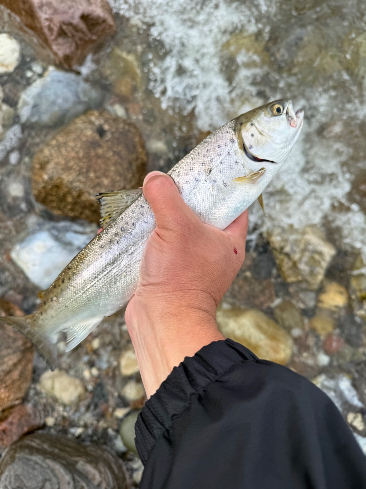

To havørreder og et fund fra stranden
To havørreder, godt fiskevejr og en gennemløber med sin helt egen historie.
Læs om turen →Fortællinger fra kysten
En personlig blog om fisketure, havørred og de stille øjeblikke langs Fyns kyster.
Se fisketurene →Fiskedagbogen
Små fortællinger, billeder og oplevelser fra mine fisketure langs de fynske kyster.

To havørreder, godt fiskevejr og en gennemløber med sin helt egen historie.
Læs om turen →
En tur med en kollega, hvor vi begge fandt fisk langs den rolige kyst.
Læs om turen →Om bloggen
Her samler jeg mine oplevelser fra de fynske kyster — uden at gøre det mere kompliceret, end en god fisketur behøver at være.